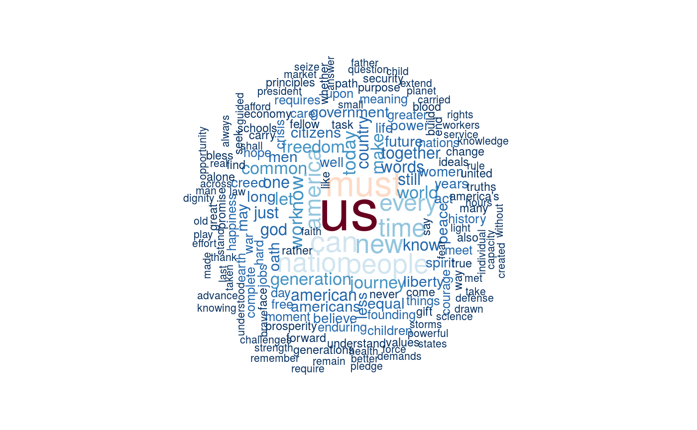

plot features as a wordcloud
Plot a dfm or tokens object as a wordcloud, where the feature
labels are plotted with their sizes proportional to their numerical values in
the dfm. When comparison = TRUE, it plots comparison word clouds by
document.
textplot_wordcloud(x, comparison = FALSE, ...)
Arguments
- x
- a dfm object
- comparison
- if
TRUE, plot acomparison.cloudinstead of a simple wordcloud, one grouping per document - ...
- additional parameters passed to to wordcloud or to text (and strheight, strwidth)
Details
The default is to plot the word cloud of all features, summed across documents. To produce word cloud plots for specific document or set of documents, you need to slice out the document(s) from the dfm or tokens object.
Comparison word cloud plots may be plotted by setting comparison =
TRUE, which plots a separate grouping for each document in the dfm.
This means that you will need to slice out just a few documents from the
dfm, or to create a dfm where the "documents" represent a subset or a
grouping of documents by some document variable.
See also
Examples
# plot the features (without stopwords) from Obama's two inaugural addresses mydfm <- dfm(corpus_subset(data_corpus_inaugural, President=="Obama"), verbose = FALSE, remove = stopwords("english")) textplot_wordcloud(mydfm)# plot in colors with some additional options passed to wordcloud textplot_wordcloud(mydfm, random.color = TRUE, rot.per = .25, colors = sample(colors()[2:128], 5))## Not run: ------------------------------------ # # comparison plot of Irish government vs opposition # docvars(data_corpus_irishbudget2010, "govtopp") <- # factor(ifelse(data_corpus_irishbudget2010[, "party"] %in% c("FF", "Green"), "Govt", "Opp")) # govtoppDfm <- dfm(data_corpus_irishbudget2010, groups = "govtopp", verbose = FALSE) # textplot_wordcloud(tfidf(govtoppDfm), comparison = TRUE) # # compare to non-tf-idf version # textplot_wordcloud(govtoppDfm, comparison = TRUE) ## ---------------------------------------------